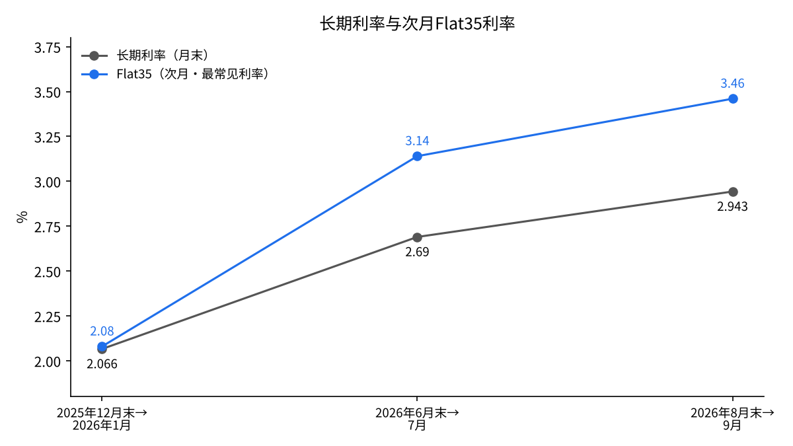
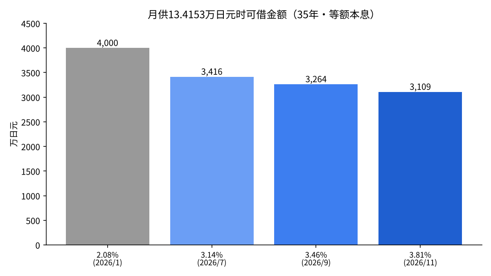

日本长期利率升至2.855%，需要几个月传导到Flat35房贷利率和东京房价？——用财务省、住宅金融支援机构、国土交通省的数据检验
日本的长期利率（10年期国债收益率）在11月13日升至2.855%。这接近一年多以前1%区间的两倍。
对购房者来说，这个数字不会直接到达。它通过房贷利率和房价本身传导过来。
本文的问题是：长期利率上升后，需要几个月才会体现在日本的全期固定利率房贷（Flat35）和东京二手公寓的价格上？
- 长期利率大约滞后1个月传导到Flat35。2025年12月末至2026年8月末，长期利率上升0.88个百分点，而次月的Flat35利率上升了1.38个百分点。
- 东京23区二手公寓价格在长期利率于2026年1月升至2.33%之后约5个月，即6月停止上涨，并在8月之前连续3个月下跌。
- 在月供不变的情况下，Flat35利率从2.08%升至3.81%，可借金额约减少22%。价格停止上涨，处在这一缩减可以解释的范围内。

问题与背景
长期利率是指剩余期限10年的国债收益率。本文使用日本财务省每天公布的10年期国债收益率[1]。一般认为，固定利率房贷是在这一收益率的基础上确定的[3]。
Flat35是日本住宅金融支援机构与民间金融机构合作提供的、最长35年的全期固定利率房贷。利率每月确定，2026年11月放款、还款期限21至35年、贷款比例90%以下的利率为年3.810%[2]。
先定义两个用语。最常见利率是指经办金融机构中使用最多的利率。贷款比例是指贷款额占房价的比例，90%以下意味着首付至少一成。
另一方面，房价并不只由房贷利率决定。建筑成本、人工以及卖方的情况也会产生影响。本文只聚焦于利率变化传导到价格所需的时间。
数据与方法
本文使用以下4组数据：(1)财务省的10年期国债收益率[1]，(2)住宅金融支援机构的Flat35最常见利率[2][3]，(3)国土交通省的既有住宅销售量指数[4][5]，(4)东京Kantei公布的东京23区二手公寓价格（按70平方米换算）[6][7]。
对于长期利率和Flat35，把月末的长期利率与次月的Flat35配成一组，比较上升幅度。因为Flat35的利率是参考上个月的市场利率确定的。
对于价格，找出停止上涨的月份，计算它与长期利率越过关口的月份之间相隔几个月。最后，以4,000万日元、35年、等额本息的贷款，计算各利率下的月供，以及月供不变时可借的金额。
结果
| 月末长期利率 | 次月Flat35（最常见） | 差（百分点） |
|---|---|---|
| 2025年12月末 2.066% | 2026年1月 2.080% | 0.01 |
| 2026年6月末 2.69% | 2026年7月 3.140% | 0.45 |
| 2026年8月末 2.943% | 2026年9月 3.460% | 0.52 |

2025年12月末至2026年8月末，长期利率从2.066%升至2.943%，上升0.877个百分点。比较对应的次月，Flat35从2.080%升至3.460%，上升1.38个百分点[3]。房贷利率的涨幅大于长期利率。与一年前的2025年6月末相比，长期利率上升了1.228个百分点[3]。
原因在于两者之差从0.01个百分点扩大到0.52个百分点。可以理解为，在利率上升阶段，放贷方加厚了加点。Flat35在2026年11月已升至3.810%[2]。
价格方面，先确认上涨持续的时期。2026年4月，东京23区二手公寓的平均价格为1亿2,724万日元，环比上涨2.4%，连续24个月上涨[11]。
此后，该价格在2026年5月之前连续25个月刷新最高纪录，之后在6月和7月下跌[6]。7月为1亿2,724万日元，比上年同月仍高21.4%，但比上月低0.1%[6]。8月再跌0.4%，至1亿2,677万日元，连续3个月下跌[7]。同在8月，东京都整体也下跌0.2%，至1亿1,274万日元，是28个月来首次下跌；周边3县则全部上涨，下跌是从市中心开始的[7]。
长期利率在2026年1月20日升至2.33%[3]。从那时到价格停止上涨的6月，大约相隔5个月。
另一方面，成交量并没有下降。经季节调整的既有住宅销售量指数在2025年9月为129.8，2026年7月为132.4，基本持平[4][5]。价格上涨停止了，但买卖本身仍在继续。
新建公寓方面，首都圈2026财年上半年的平均价格同比上涨21.1%，至1亿1,494万日元，而发售套数减少6.0%，为8,601套[9]。据报道，买方跟不上高企的价格。
敏感性分析
| Flat35利率 | 月供（4,000万日元・35年） | 按2.08%时的月供可借金额 |
|---|---|---|
| 2.08%（2026年1月） | 13万4,153日元 | 4,000万日元（基准） |
| 3.14%（2026年7月） | 15万7,082日元 | 3,416万日元（-14.6%） |
| 3.46%（2026年9月） | 16万4,391日元 | 3,264万日元（-18.4%） |
| 3.81%（2026年11月） | 17万2,580日元 | 3,109万日元（-22.3%） |

同样借4,000万日元，月供从2.08%时的13万4,153日元增至3.81%时的17万2,580日元，增加3万8,427日元。反过来，若把月供保持在13万4,153日元，可借金额会减少到3,109万日元。即使在7月的3.14%也减少了14.6%，在9月的3.46%减少了18.4%，利率每上升一次，上限就下降一次。
可借金额减少两成，同等收入的人能出的价格也会下降近两成。例如，对于让月供占收入比例保持不变的买方来说，利率只要上升1.7个百分点，预算就会从4,000万日元缩到3,100万日元区间。价格停止上涨、高价房源开始滞销，与这种缩减并不矛盾。
在目前2.855%的长期利率上加上7月和9月的差（0.45至0.52个百分点），12月的Flat35将是3.31%至3.38%。那样的话，可借金额的缩减将回落到16.6%至17.5%。
讨论
也有相反的看法：价格停止上涨不是因为利率，而是因为建筑成本飙升使新建公寓过于昂贵，买方跟不上了[9]。新建公寓发售套数的减少支持这种看法。此外，23区二手公寓已连续上涨两年多，也可以看作与利率无关的、涨过头之后的休整。利率上升与价格见顶同时发生，这本身并不能证明因果关系。
实际上，日本大多数借款人选择浮动利率房贷。浮动利率与日本银行的政策利率挂钩，因此长期利率的上升首先影响的是以固定利率借款的人，以及在固定与浮动之间比较的人。
数据也有局限。比较的月份只有3组，不足以从统计上确定滞后的月数。Flat35作为产品也有变化，例如从2024年2月起扩大了对育儿家庭的优惠，因此跨年度简单比较最常见利率也有局限[10]。二手公寓价格是按70平方米换算的平均值，也会随成交房源的房龄和地段而变动。
检验标准有两个。从12月起，在长期利率维持在2.8%区间的情况下，23区二手价格是否继续下跌？销售量指数是否开始下降？如果成交量下降，就说明利率开始冷却的不仅是价格，还有交易本身。
结论
长期利率大约滞后1个月传导到Flat35，在放贷方加厚加点的阶段，传导幅度会超过其自身的涨幅。在东京23区，长期利率升至2.33%后约5个月，以价格停止上涨的形式体现在二手公寓价格上。不过成交量尚未下降。下跌从市中心开始，周边各县仍在上涨。利率传导到价格的路径，看来首先是压低可借金额的上限，使最贵的房源最难卖出。
我的看法
我做过不动产生意。以固定利率借款的时候，让我害怕的不是利率上升本身，而是利率上升导致不动产价格下跌。这次的数据看起来正是按这个顺序在变化。
我认为，利率上升时，用借款买房的人的抛售会先出现在二手公寓和塔楼公寓，之后才轮到大型写字楼和商业楼。这两种公寓我都没有购买的打算，还没轮到我出手。我把资金放在银行股上，在有利率的世界里，银行的利润会增长。
来源
- 日本财务省「国债利率信息」 https://www.mof.go.jp/jgbs/reference/interest_rate/index.htm
- 日本住宅金融支援机构「Flat35贷款利率（2026年11月放款）」 https://www.simulation.jhf.go.jp/flat35/kinri/index.php/rates/top/
- Recruit「Flat35利率走势与最新动向」（2026年7月・9月更新） https://finance.recruit.co.jp/article/?p=15561
- 日本国土交通省「既有住宅销售量指数 2025年12月」（2026年3月31日） https://www.mlit.go.jp/report/press/content/001991550.pdf
- 日本国土交通省「既有住宅销售量指数 2026年7月」（2026年10月30日） https://www.mlit.go.jp/report/press/content/002028246.pdf
- 共同社「东京23区二手公寓价格7月持平」（东京Kantei发布・2026年8月24日） https://kumanichi.com/articles/2028237
- 东京Kantei「按70平方米换算的价格走势 2026年8月」（转载） https://www.mec-h.com/news/43
- 共同社「日本长期利率升至2.855%」（2026年11月13日） https://www.oanda.jp/lab-education/market_news/kn_2026111301001138/
- 共同社「首都圈4至9月新建公寓均价超过1亿1千万日元，上涨21%」（不动产经济研究所发布・2026年10月20日） https://kumanichi.com/articles/2048561
- 钻石不动产研究所「11月Flat35利率或在3.5%区间」（2026年10月22日） https://diamond-fudosan.jp/articles/-/1113355
- 东京Kantei「按70平方米换算的价格走势 2026年4月」（转载） https://www.mec-h.com/news/38
照片：Unsplash。图表由YUKI CAPITAL制作
每天的数字和判断，我都记录在X上。